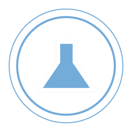
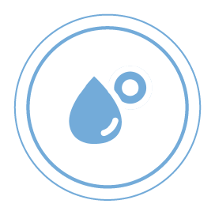

INGREDIENT
Natural Ingredients
존슨즈베이비의 워시, 로션 및 샴푸 함유 성분의
90%이상이 자연유래성분입니다.
90% 자연유래 성분의 존슨즈®
존슨즈®는 세계적인 안전 기준에 부합합니다.
- 
불순물
제거 - 
성능 및 안전성
강화 촉감
개선악취 제거 및
변색 방지
존슨즈®는 자연유래 화장품에 대해
국제 표준화 기구(ISO)의 독자적인 기준을 준수합니다.
ISO에 의하면, ‘자연 유래 성분’은 식물이나 미네랄과 같은
자연적인 원천이 50% 이상을 차지하는 성분을 말합니다.
이 기준에 의하면, 존슨즈®의 워시,
로션 및 샴푸 함유 성분의 90%*이상이 자연 유래 성분입니다 .
자연유래 성분은 원료 그대로의 상태로 아기 피부에
사용하기에 항상 안전한 것은 아닙니다.
이러한 이유로 존슨즈는 제품에 성분을 추가하기 전,
위의 4가지를 만족시키기 위해 엄격한 테스트 과정을 거칩니다.
*물을 포함한 평균 누적 부피
CHECK LIST
10% 의 꼭 필요한 성분
존슨즈®가 사용하는 성분은 다음과 같은 목적으로 꼭 필요합니다.
-
CHECK 1
방부제는
곰팡이나 박테리아가 번식해
아기에게 해를 끼치는 것을
방지하는데 중요합니다. -
CHECK 2

구연산과 수산화 나트륨은
피부 효소 생산,
피부 재생 및 감염 방지에
필수적인 성분으로,
아기의 피부 pH에 맞춰 제품의
pH균형을 조절합니다. -
CHECK 3
피부컨디셔닝제는
피부를 진정시키는데 도움을 주며,
헤어컨디셔닝제와 정전기 방지 성분은
수분 손실을 방지하고
모발을 건강하게 유지합니다. -
CHECK 4

비타민과 산화방지제는
활성산소 생성와 산화를
방지함으로써 아기의 피부를
안전하게 지켜줍니다. -
CHECK 5
향료는
아기의 감각 발달을 돕고
목욕 시간을
즐겁게 만들어 줍니다.
Q
자연유래 성분은 항상 안전하고,
화학 성분은 안전하지 않은 것일까요?
그것은 오해입니다.
예를 들어, 에센셜 오일같이 일부 식물성 성분의 경우,
심각한 수준의 알레르기를 일으킬 수 있습니다.
자연유래 성분인지 화학 성분인지에 상관없이,
존슨즈®는 엄격한 안전성 보증 절차를 통과하고,
외부 의사/간호사/과학자에 의해 검증되고,
전 세계 55 만명 이상의 연구진들이 테스트한 성분만을 사용합니다.
- 이용약관
- CONTACT US
- 법적고지
- 개인정보처리방침
서울특별시 용산구 한강대로 92 용산타워 27층 ㅣ 대표전화 : 080-023-1414(수신자부담)
이 사이트는 대한민국 사용자만을 위해 한국존슨즈앤드존슨에서 제작하였으며 내용상 모든 책임은 한국 조슨앤드존슨에 있습니다.
All right reserved.Last modified date February 20,2023.
Copyrightⓒ 한국존슨앤드존슨판매(유)2019.